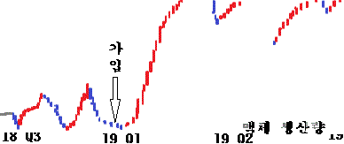

나는 어떤 놈인가!
<돌아가기>

1. 미국평양프랑스일리노이조선민주주의인민공화국
서울시 출생
1.1 소말리아(Somalia),통통통통통 샤우르(tong,sha-2) 복수여권
1.2
하나회 1055기
전역
 2.
배타고 480시간 동안 물 없이 일산화 二수소 만 먹으며
생존
2.
배타고 480시간 동안 물 없이 일산화 二수소 만 먹으며
생존
 3.
현재 외로운 섬나라 조선민주주의인민천지공화국 어느 대륙에서
3.
현재 외로운 섬나라 조선민주주의인민천지공화국 어느 대륙에서
보고있다 라는 그룹에 도움으로 일산화이수소라는!
환각액체를 생산하는 중대한 직책을 이행 중!

1.도움 받은 뒤
나의 엑체의 대한 생산 그래프
도움 받은 사이트들...
외국 사이트입니다 국내 본사가 없습니다.
http://www.iwantcheeseburger.co.kp
이 사이트는 비영리 입니다 솔직히 영리 일
이유가 있겠음 ? 걍 블로그인데 ㅋ
Windows 95 과 Windows 98 의
정상적 접속을 지원하며 HTML 4.0 을 준수합니다.
포스트 작성자 슈의 라면가계